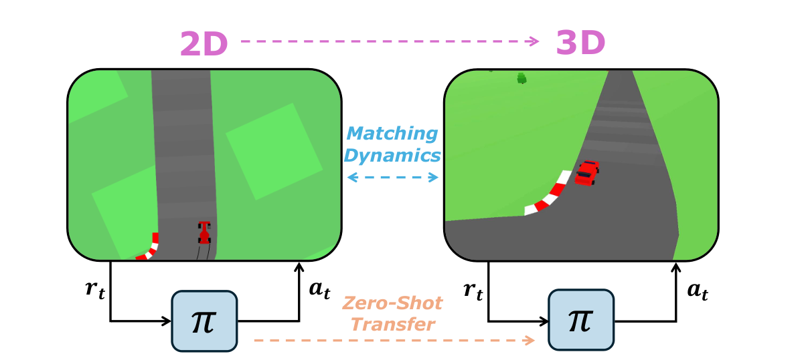
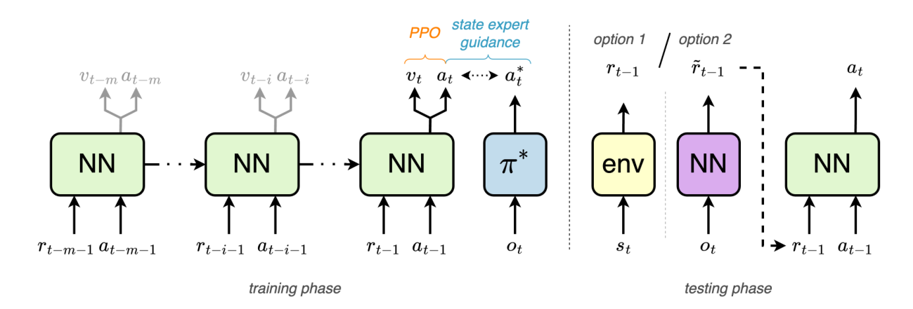
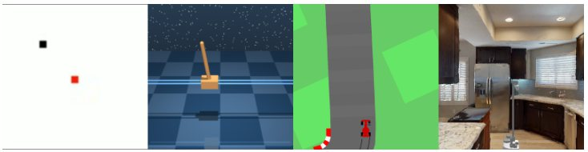
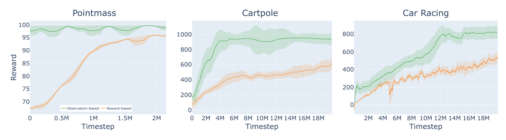
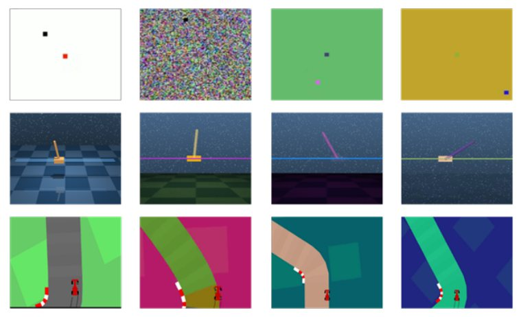
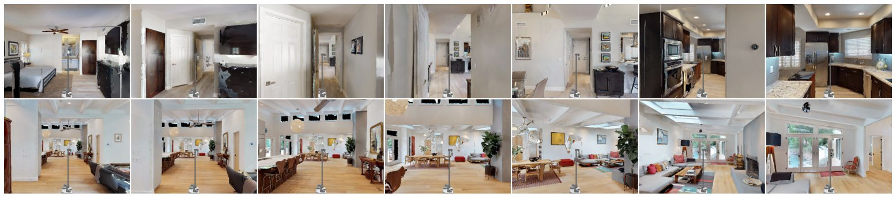
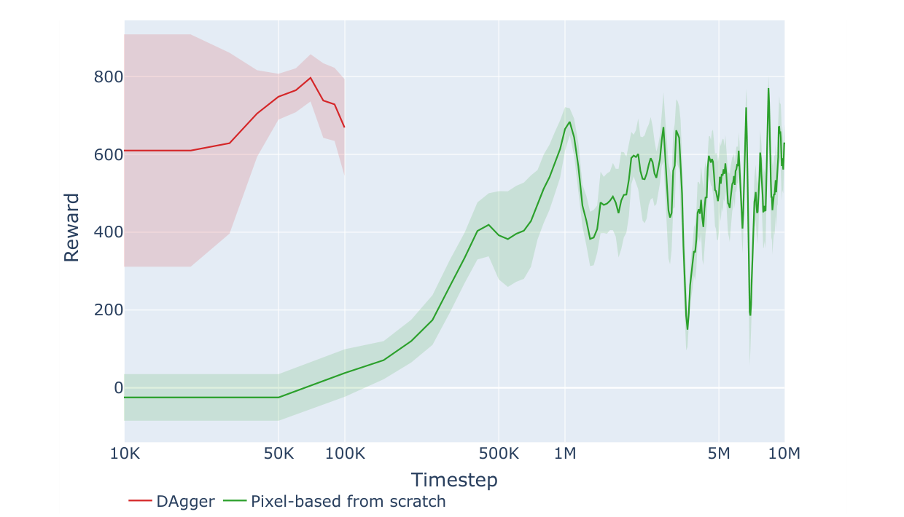
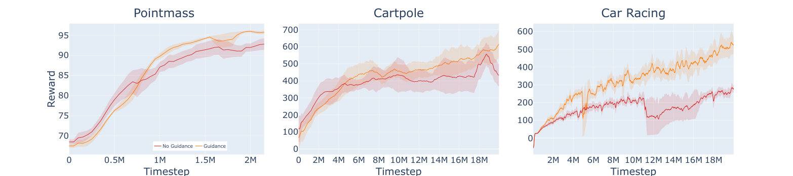

Learning Reward-Based Policies for Rapid Adaptation
A policy that sees only its recent rewards and actions never looks at the screen, so it keeps working when the screen changes. We train one in a cheap 2D simulator and deploy it, unchanged, in a 3D renderer and on a Stretch robot in scanned real homes.

Source and target environments share state space, actions, dynamics, and reward. Only the observation differs, in any way at all: 2D to 3D, RGB to RGB-D, a new camera. We build a reward-based MDP by swapping the observation for a short history of reward and action pairs. That MDP is identical in source and target, so a policy trained in one runs in the other without modification.

Train πrwd with PPO on reward/action history, regressing its actions toward an observation-based expert to keep exploration productive.
cheap simulator · e.g. 2D Car RacingRun the same checkpoint in the target. It never reads the target's observations, so nothing needs aligning.
new observations · e.g. 3D render, Habitat-SimUse πrwd as a DAgger teacher to train an observation-based policy that needs no reward at inference.
target pixels · CNN-LSTM studentBy Takens' embedding theorem, a D-dimensional state can be reconstructed from a scalar history of length K ≥ 2D + 1. An LSTM keeps a variable-length history so K need not be tuned.
A scalar reward is a projection of the state. The optimality gap is bounded by Lε / (1 − γ), where ε is state reconstruction error, and ε is expected to grow as O(cD).
The reward must be dense. A reward given only at the goal leaves the agent blind for most of the trajectory.
Exploration costs steps. In 2D Pointmass the agent needs at least two probing moves before it can localize itself.
| Dimension | State-based | Reward-based |
|---|---|---|
| 1 | 99.83 | 98.73 |
| 2 | 99.60 | 97.11 |
| 3 | 99.48 | 95.94 |
| 4 | 99.34 | 88.12 |
| 5 | 99.14 | 85.96 |
| 6 | 99.05 | 57.18 |
The goal is hidden. You get the same input the policy gets: the reward after each move, r = exp(−3·d) where d is the distance to the goal. Probe, compare, and find it. Then watch a simple probing agent do the same.
The probing agent climbs one axis at a time using only reward changes, a hand-written stand-in for the learned LSTM policy.
Across three seeds, reward-based policies reach 95%, 66%, and 70% of state-based performance in Pointmass, Cartpole, and Car Racing. Car Racing uses a dense reward, r = rdistance · rangle, built from distance to the next waypoint and heading error. The agent sometimes drifts off the centerline to gather more reward signal before correcting.


We recolor every environment, including a pure noise background for Pointmass. The reward-based policy never sees the pixels, so its score barely moves.
| Observation | Pointmass | Cartpole | Car Racing |
|---|---|---|---|
| Original | 97.06 ± 1.36 | 758.74 ± 62.79 | 775.37 ± 225.27 |
| Shifted | 95.96 ± 2.47 | 755.45 ± 52.63 | 715.93 ± 264.28 |

We built a 3D renderer with the same track layout and transition dynamics as Gymnasium Car Racing. The reward-based policy trained in 2D drives the 3D track directly, with behavior indistinguishable from the 2D expert.
The same Car Racing checkpoint, with no retraining, drives a Stretch mobile robot along navmesh corridor tracks in two HM3D building scans in Habitat-Sim. Reward is computed from the robot's pose relative to recorded waypoints, which a real robot could get from localization. It succeeds in both scenes despite a different renderer and a different embodiment.

Learning 3D Car Racing from pixels with a CNN-LSTM is slow, even on a log timestep axis. With the reward-based policy as a DAgger teacher, the pixel student reaches near-optimal driving in about 70,000 steps.
The upfront source training pays for itself twice. One reward-based policy serves every target that shares the reward and action spaces. And source simulators are usually light and parallel, while photorealistic targets cost far more per step.

When the target gives images but no reward, you can learn to estimate one. With 100,000 image samples in Cartpole, a learned five-dimensional state estimator drives the state-based policy down to random-policy level. A learned scalar reward estimator keeps the reward-based policy close to its source score.
| Policy | Original domain | Image domain |
|---|---|---|
| State-based | 915.49 ± 2.24 | 189.41 ± 12.54 |
| Reward-based | 836.49 ± 4.46 | 735.83 ± 65.48 |
| Random | – | 192.78 ± 36.91 |
Guidance helps a little in Pointmass and Cartpole, where poor exploration still earns reward. In Car Racing, leaving the track ends the episode and cuts off the reward signal. Guidance keeps episodes alive long enough to learn.
